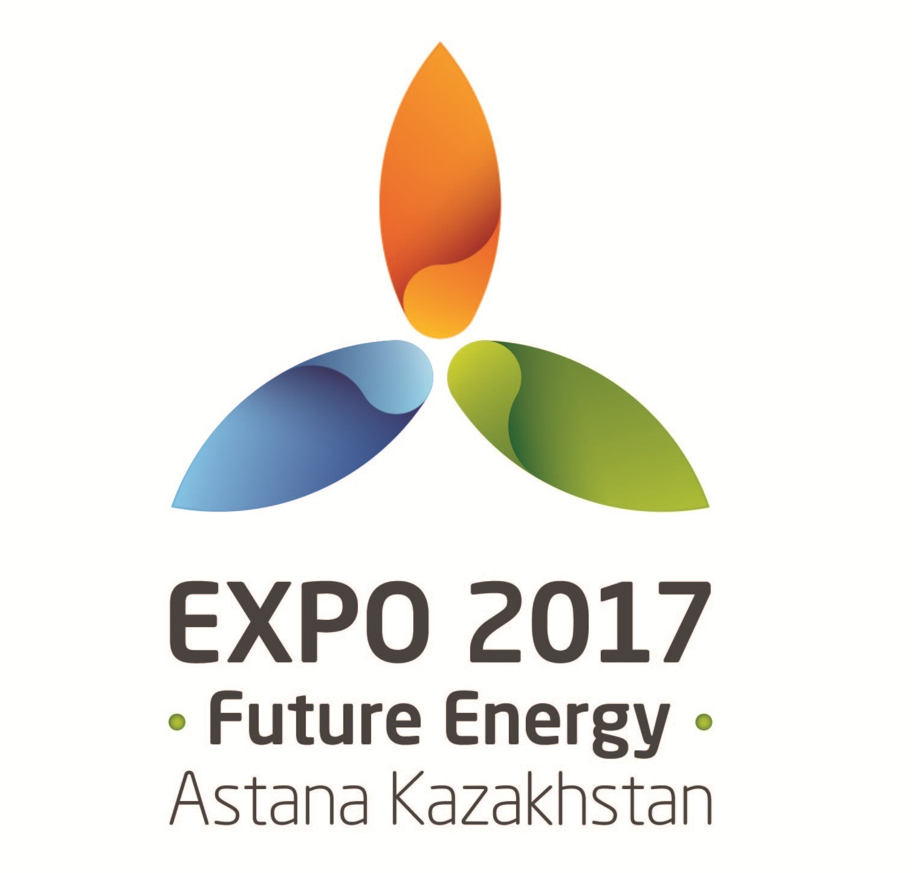

ЭКСПО в Астане
Экспо-2017 Астана — специализированная международная выставка, признанная Бюро международных выставок (МБВ), которая проходит в столице Казахстана городе Астана с 10 июня по 10 сентября 2017 года. Тема выставки «Энергия будущего». EXPO-2017 ожидает участия более 100 стран и международных организаций и 2-3 миллиона посетителей.
Виды выставок
Зарегистрированные выставки наиболее крупные по масштабу мероприятия. Ранее зарегистрированные выставки назывались «Универсальные выставки». Этот тип выставок проводится каждые 5 лет, из-за своей высокой стоимости, в большей части связанной с проектированием и возведением павильонов. В результате страны соревнуются за титул наиболее запоминающегося павильона.
Признанные выставки меньше по размерам и общей стоимости, и короче по продолжительности (от 3 недель до 3 месяцев). Затраты участников меньше, так как им достаточно арендовать у организатора заранее построенный павильон. Затем у них имеется возможность добавить свои собственные цвета, дизайн и т. п. снаружи объекта и заполнить его своей продукцией.
Предстоящий выставки
ЭКСПО-2017 пройдет в Астане, Казахстан.
Экспо-2017 пройдет в Астане, Казахстан.
Экспо-2020 пройдет в Дубае, ОАЭ.
Один из крупнейших городов Польши Лодзь заявил о своей кандидатуре на проведение всемирной выставки Экспо-2022.
История выставок
История Всемирных выставок начинается с «Великой выставки промышленных работ всех народов», состоявшейся в Лондоне в 1851 г., и продолжается по сегодняшний день. В 1928 г. в Париже для регулирования выставочной деятельности было образовано Международное бюро выставок (МВБ). На сегодняшний день это одна из самых давних и представительных международных структур (в ее состав входит 166 стран). Международное бюро выставок следит за соблюдением принципов и задач Всемирных выставок; в рамках международного сотрудничества проводятся мероприятия в образовательной сфере, в сфере инноваций, встречи по обмену мнениями и развитию глобального диалога по общечеловеческим проблемам.

Хрустальный дворец, символ первой Всемирной выставки